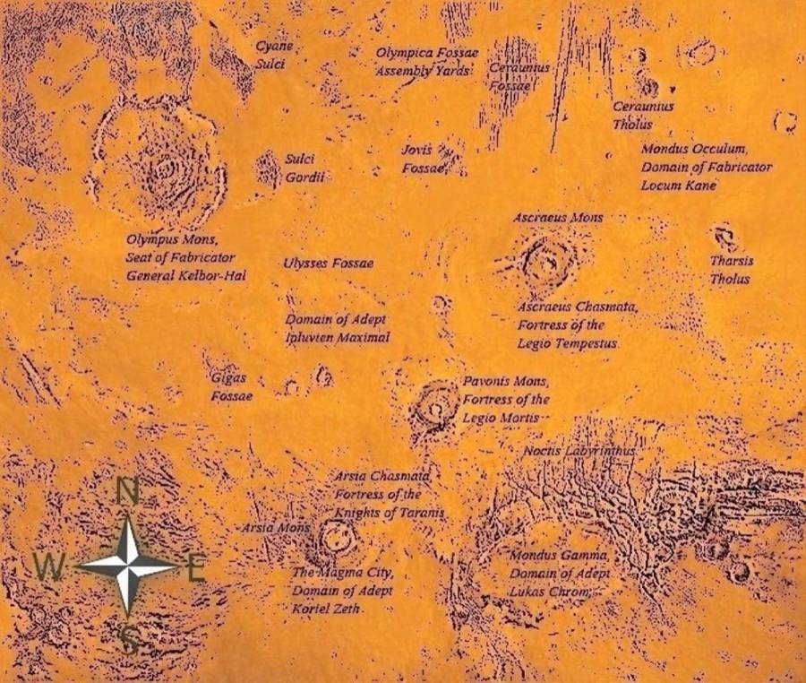

Tharsis Montes
| Tharsis Montes | |
|---|---|
| The Tharsis uplands of Mars | |
 Mechanicum chart of Tharsis in the early 31st millennium, showing the domains of the forge masters | |
| Location | Western equatorial region of Mars, Sol System |
| Type | Volcanic upland with three great shield volcanoes |
| Peaks | Arsia Mons, Pavonis Mons, Ascraeus Mons; Olympus Mons at the north-western edge |
| Chief forges | Mondus Occulam; Mondus Gamma; the Magma City (destroyed 005.M31) |
| Military seats | Legio Tempestus (Ascraeus Chasmata); Legio Mortis (Pavonis Mons, before 005.M31); House Taranis (Arsia Chasmata) |
| Controlled by | Adeptus Mechanicus |
| Notable events | |
| Treaty of Olympus (739.M30); Schism of Mars (005–006.M31); Great Scouring (c. 014–020.M31) | |
The Tharsis Montes are the three great volcanoes, Arsia Mons, Pavonis Mons and Ascraeus Mons, that stand in a line across the Tharsis uplands of Mars. The name is often used for the whole volcanic region around them, which also contains Olympus Mons, the capital of the Adeptus Mechanicus. Tharsis holds many of the oldest and most honoured forge temples on the planet, and mastery of a Tharsis forge is still among the highest honours of the priesthood.[1]
During the Great Crusade the forges of Tharsis made much of the power armour and the bolters of the Space Marine Legions, and the fortresses of several Titan Legions stood among its peaks. In the Schism of Mars of 005–006.M31 the region became the main battlefield of the Martian civil war.[1][2]
Geography
[edit]Tharsis is a vast volcanic plateau raised high above the Martian datum. The three Tharsis Montes rise from it in a line running from south-west to north-east, with Olympus Mons further to the north-west. To the east the land falls away into the canyons of the Noctis Labyrinthus and the Valles Marineris. The plains between the volcanoes are crossed by fault valleys, called fossae, many of which have been built over by assembly yards and refineries.[1]
Forges and fortresses
[edit]A Mechanicum chart of the early 31st millennium names the following domains in Tharsis:[1]
- Olympus Mons, seat of the Fabricator-General, then Kelbor-Hal.
- Ascraeus Chasmata, on Ascraeus Mons, fortress of the Legio Tempestus.
- Pavonis Mons, fortress of the Legio Mortis, which turned traitor in 005.M31.
- Arsia Chasmata, near Arsia Mons, fortress of the Knights of House Taranis.
- The Magma City, on the slopes of Arsia Mons, domain of the forge master Koriel Zeth.
- Mondus Occulam, in the north-east, domain of Zagreus Kane, then Fabricator Locum.
- Mondus Gamma, on the edge of the Noctis Labyrinthus, domain of the adept Lukas Chrom.
- The Olympica Fossae assembly yards, north of the volcanoes.
History
[edit]Before the Imperium
[edit]The forges of Tharsis are among the oldest on Mars. Mechanicus records trace several of them to the Dark Age of Technology, when the region's mineral wealth and stable rock made it the centre of Martian industry. During the Age of Strife it was the heartland of the Mechanicum, and the Fabricator-General ruled from Olympus Mons on its edge.[1][a]
Great Crusade
[edit]After the Treaty of Olympus of 739.M30, the forges of Tharsis armed the Great Crusade. Forge masters such as Koriel Zeth and Zagreus Kane became powers in their own right, and the Titan Legions based in the region marched with the expedition fleets.[1][3]
Schism of Mars
[edit]When Kelbor-Hal declared for Horus in 005.M31, a corrupting scrapcode spread across Tharsis and the forges turned on one another. The Legio Mortis marched from Pavonis Mons against the loyalist Legio Tempestus and Legio Ignatum, and the Titans fought across the Tharsis plains. The Magma City of Koriel Zeth was destroyed and Zeth was killed. A force of Imperial Fists under Sigismund landed at Mondus Occulam to recover what it could before the forge was overrun. Zagreus Kane escaped and fought on in the deserts and catacombs.[2][1]
Recovery
[edit]Loyalist forces retook Tharsis with the rest of Mars during the Great Scouring, about 014–020.M31. Kane became Fabricator-General, and the forges of the region were purged, rebuilt and rededicated over the following century. Tharsis has remained the industrial centre of the planet ever since, and in the Era Indomitus its forges are among those working at full output for the Indomitus Crusade.[1][4][b]
Timeline
[edit]| Date | Event |
|---|---|
| Dark Age of Technology (estimated) | First forges founded in Tharsis |
| 739.M30 | Treaty of Olympus; Tharsis arms the Great Crusade |
| 005.M31 | Schism of Mars; Titan war on the Tharsis plains; Magma City destroyed |
| c. 014–020.M31 (estimated) | Tharsis retaken; Zagreus Kane becomes Fabricator-General |
| 000.M42 onward | Forges at full output for the Indomitus Crusade |
See also
[edit]Notes
[edit]References
[edit]- ^ a b c d e f g h Liber Martis: Chronicles of the Red Planet (rev. M41). Temple of All Knowledge, Mars.
- ^ a b Chronicles of the Heresy (sealed). Logos Historica Verita, Terra.
- ^ Sindermann, Kyril (c. 004.M31). Remembrances of the 63rd Expedition. Remembrancer Order.
- ^ Records of the Indomitus Crusade (ongoing). Office of the Lord Commander.